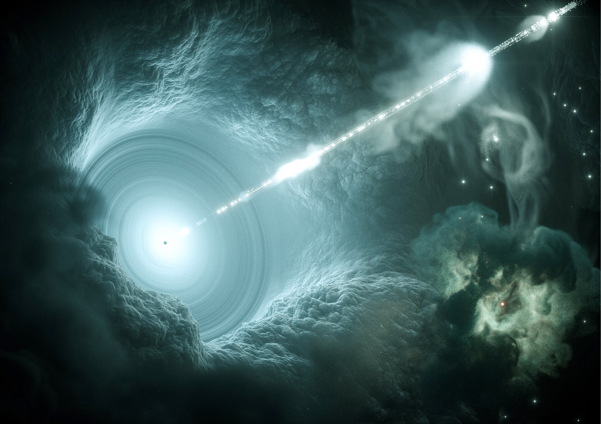

Recently, due to global warming and concearns about Earth which might not be the right planet for us, scienctists have looking in our whole universe for other habitable exoplants. Scientists have found seven earth-like exoplanets which are orbiting their star in it's habitable zone which might be better than earth. The only issue is, the closest one is 4.2 light years away
Absoulutely nothing can travel at the speed of light. And even if we want to get there, it could take us ages to take the whole human population to the exoplanet.A maasive solar flare is said to hit earth in 2025. This solar flare is said to be one of the most dangerous and powerful solar flare ever kniwn to humanity. If not prepared in time, it coould completely destroy Earth's gravitational magnet and cause powerout around the globe which could last from 2 hours to 2 months or even 2 years !
